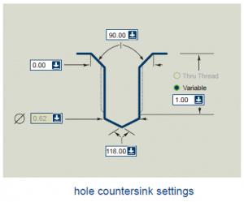

Aquí está la planificación del proyecto Diseño de Piezas como parte del mapa de desarrollo.
Contents
Propósito y principios
Este es un proyecto de desarrollo de software que trata de implementar capacidades de diseño de Piezas. Trata de implementar algunas características principales en los módulos de CAD de FreeCAD, Pieza, Diseño de Pieza y Ensamblaje (Part, PartDesign y Assembly).
Los pasos de desarrollo son planificados aquí y rastreados en el sistema de rastreo de incidencias para tener un registro de cambios bien definido: Rastreo de incidencias
Resultado
La intención del proyecto es permitir conseguir a FreeCAD una tarea de diseño como la que puede verse a la derecha.

Esto se logrará utilizando el Croquizador (Sketcher) y el Diseño de Piezas (PartDesign) para diseñar partes especiales y Pieza (Part) para cargar piezas estándar como STEP. El Ensamblaje (Assembly) lo pone todo junto con restricciones.
También un resultado importante es la Metodología de edición de Operaciones. La cual da al usuario una aproximación intuitiva a la reutilización y edición de operaciones. Esto es importante para todos los demás módulos y entornos que están por llegar, para cumplir con una interfaz de usuario coherente!
{kind=link}
{kind=link}
Croquizador
Un croquizador paramétrico con un solucionador de restricciones geométricas, para más detalles mira el Proyecto del Croquizador.
Diseño de Piezas
Operación principal de pieza MainPart
Ya que un modelado basado en el historial puede tener un montón de pasos para llegar a la forma final, es necesario una agrupación. Esta es la MainPart, que tiene el resultado final del modelado y actúa como un grupo para todas las operaciones del árbol de historial.
Operación saliente
Una Pad feature extruye un croquis (o cualquier Part2DObject) en la dirección de su normal. Siempre que garantice la creación de un sólido, o dará error.
Operación cajera
Marca un croquis en un sólido base definiendo su profundidad o "Hasta el último | Hasta el primero". También garantiza la obtención de un sólido.
Operación taladro
Una muy buena definición de parámetros de taladros de la especificación de NaroCad:

|

|
 |
{kind=link}
Matriz
Replica una de las operaciones indicadas arriba
Matriz rectangular
Replica una de las operaciones indicadas arriba a lo largo de X,Y
Matriz circular
Replica una de las operaciones indicadas arriba a lo largo de una matriz de coordenadas polares
Matriz de archivo de guión
Replica una de las operaciones indicadas arriba de acuerdo a las reglas generales proporcionadas en forma de un archivo de guión.
Tormenta de ideas
Qué hacen los otros
Implementación de matrices
La clase de operaciones de matrices puede ser implementada como un patrón tabular y servir como clase base para las operaciones de matrices rectangulares, circulares y según archivos de guión. Dichas clases derivadas sólo tendrán que rellenar en la tabla de repeticiones de la clase base.
Cada línea de la tabla de repeticiones de la clase matriz base tiene que manejar al menos una matriz de transformación a aplicar a la Ubicación de la operación original a ser replicada. Adicionalmente podríamos tener unas reglas de transformación como por ejemplo la manipulación de algunos valores de parámetros de la operación a replicar (por ejemplo para crear una matriz de taladros con un radio variable).
Organización
Jerarquía de objetos de modelado
Este gráfico [1] muestra la jerarquía de objetos planificada y sus relaciones. En amarillo las clases base abstractas, en azul las implementadas y en gris las que están planificadas.

Tutoriales
PartDesign Bearingholder Tutorial I
PartDesign Bearingholder Tutorial II
Siguientes acciones
Las siguientes acciones están definidas en el mapa de desarrollo en Mantis para PartDesign:
MainPart
Debido a la naturaleza paramétrica/asociativa de PartDesign necesitamos una "MainPart" que agrupe y organice un historial de construcción. MainPart por si mismo contiene el resultado final como una forma y ha agrupado como hijas las operaciones de PartDesign. También define la cabecera del historial de modelado. También está relacionado con el Proyecto de Ensamblajes pues son los bloques de construcción para los productos y componentes.
Operaciones adicionales
Las operaciones Pad y Pocket son las primeras piezas de PartDesign. Aún queda trabajo por hacer especialmente con la visibilidad y control visual de manipuladores. Pero después se necesitarán operaciones adicionales.
Matrices
Las operaciones de Matrices que aplican repetidamente una operación Pad o Pocket de acuerdo a patrones circulares o rectangulares. Un ejemplo en IronCAD.
TERMINADO [jrheinlaender]
Taladros
Taladros clásicos con todos los parámetros de roscado y avellanado....
Barrido
Barre un croquis a lo largo de una curva y crea un sólido.
Revolución
Gira un croquis alrededor de un eje un cierto ángulo.
TERMINADO [jrheinlaender y al.]
Lista de tareas
1. Redondear/Achaflanar Pieza
1.a Aplicar operaciones de redondeo/chaflán a diferentes tipos de selección (cara/pares de caras/cuerpo completo)
3. Herramienta Saliente
2.a Crear modo 'hasta el siguiente TERMINADO [mrlukeparry]
2.b Crear modo 'hasta la superficie/cara' [mrlukeparry]
2.c Crear propiedad de croquis para Pad TERMINADO [mrlukeparry]
2.d Si pad es seleccionado sobre una cara automáticamente crear un croquis?
2e. Crear modo 'plano medio' TERMINADO [jrheinlaender]
3. Herramienta Cavidad
3.a Crear los modos 'hasta el primero', 'hasta el último', 'pasante', 'hasta la superficie/cara' TERMINADO [jrheinlaender]
3.b Si pocket es seleccionado sobre una cara automáticamente crear un croquis?
4. Revolucionar Pieza
4.a Permitir que un segmento de línea / eje sea utilizado como referencia
4b. Crear modo 'plano medio' TERMINADO [jrheinlaender]
5. Operación Taladro
6. Operación Matriz TERMINADO [jrheinlaender]
7. Operación Barrido
8. Operación Main Part
9. Geometría de referencia
9.a Plano
10. Herramienta de Simetría TERMINADO [jrheinlaender]
11. Herramienta copiar operaciones
12. Herramienta matriz de operaciones